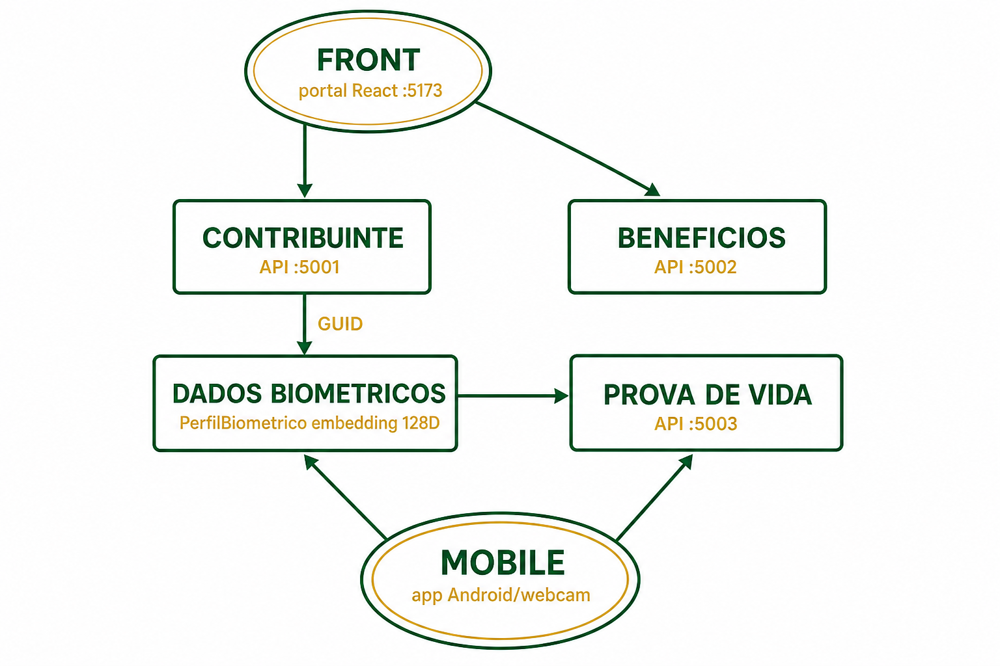
Do desenho da turma → código no pacote
FRONT · CONTRIBUINTE · BENEFÍCIOS · DADOS BIOMÉTRICOS · PROVA DE VIDA · MOBILE
fiap-aluno-com-prova-vida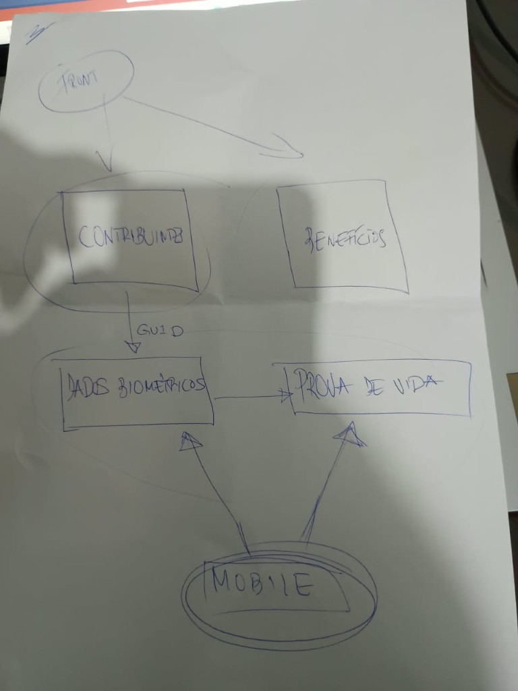

| Desenho | Antes | Implementado a mais |
|---|---|---|
| FRONT | Portal :5173 | Webcam :5180 (demo) |
| CONTRIBUINTE | :5001 | Pensionista + /pensionistas |
| BENEFÍCIOS | :5002 | (igual — fora do fluxo PV) |
| DADOS BIOMÉTRICOS | — | NOVO Perfil + 128D + GUID |
| PROVA DE VIDA | — | NOVO API :5003 |
| MOBILE | — | NOVO app-mobile / APK |
| Pasta | Conteúdo |
|---|---|
fiap-aluno-sem-prova-vida | FRONT + CONTRIBUINTE + BENEFÍCIOS |
fiap-aluno-com-prova-vida | + DADOS BIOMÉTRICOS + PROVA DE VIDA + MOBILE |
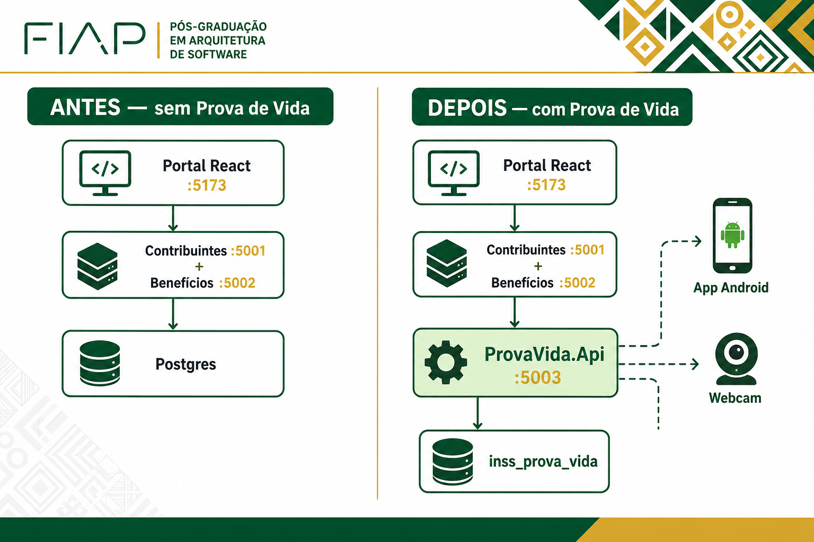
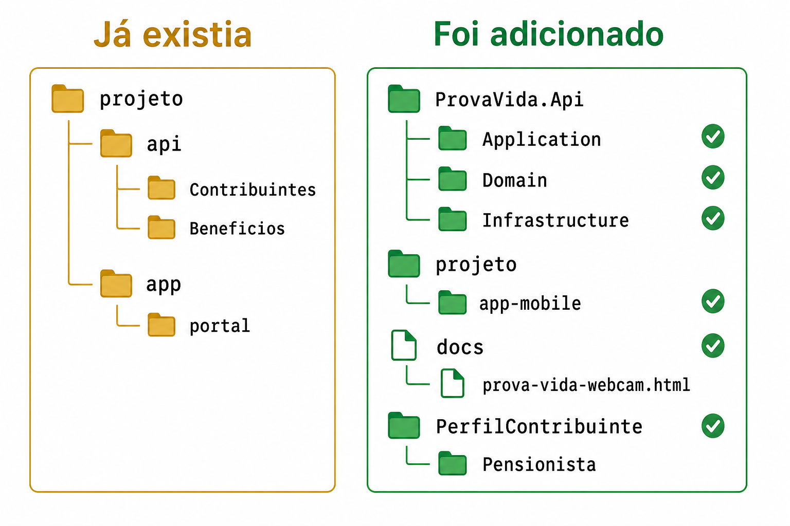
30040050x/pensionistas e /por-nuit100200301) → deve falhar na PV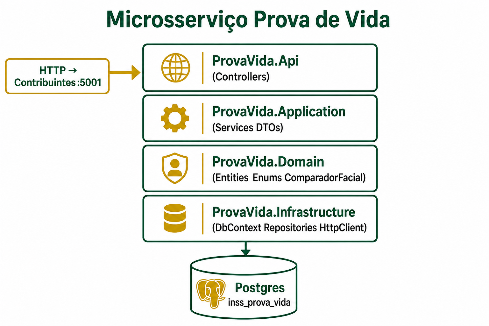
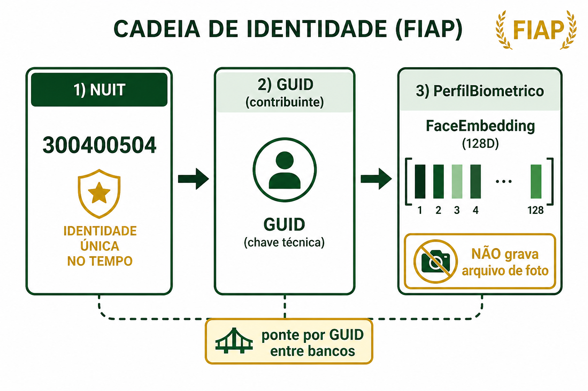
prova-vida-webcam.htmlprojeto/app-mobile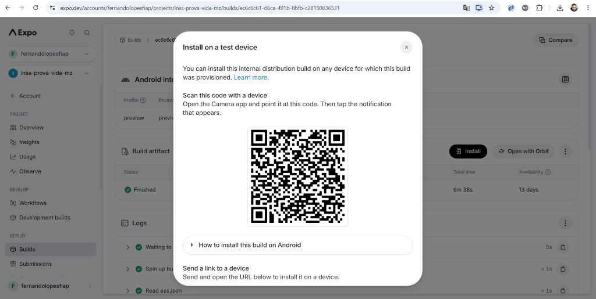
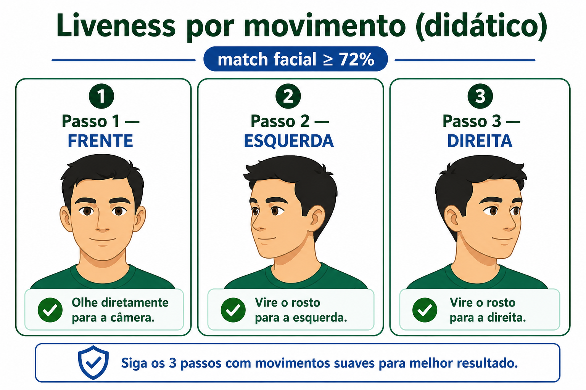
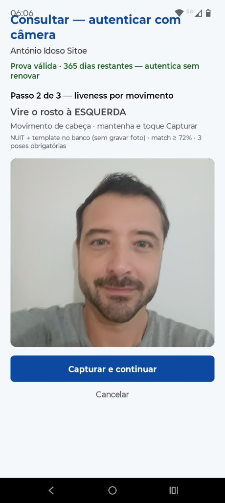
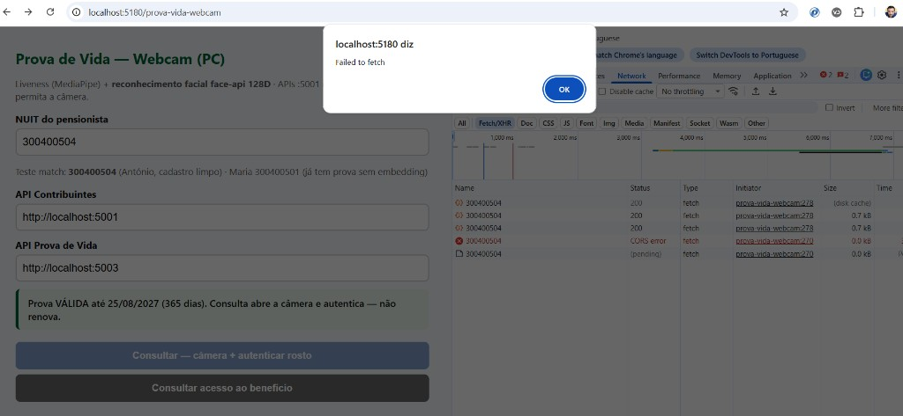
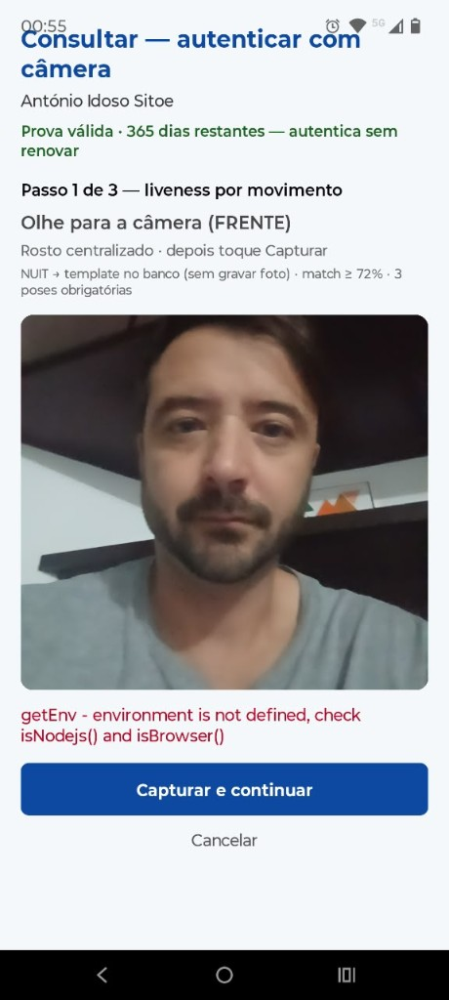
cd C:\fiap-aluno-com-prova-vida\projeto\api docker compose up -d dotnet run --project src\Contribuintes.Api --no-launch-profile --urls http://0.0.0.0:5001 dotnet run --project src\ProvaVida.Api --no-launch-profile --urls http://0.0.0.0:5003 cd ..\..\docs npx --yes serve . -p 5180 --no-clipboard
300400504 · António Idoso Sitoefiap-aluno-com-prova-vida no HDAbram o pacote com-prova-vida
Sigam I1→I9 no roteiro · depois rodem o ambiente